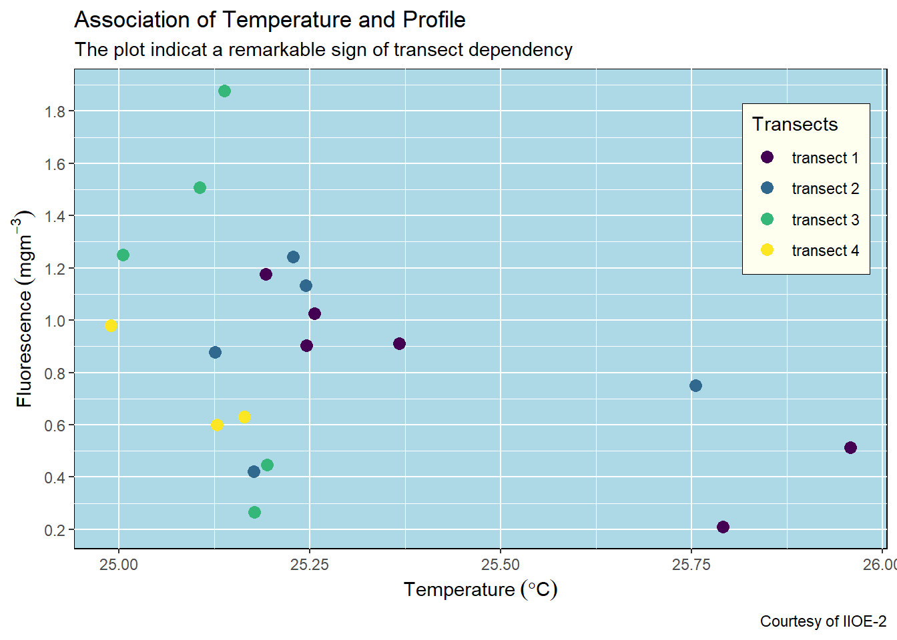
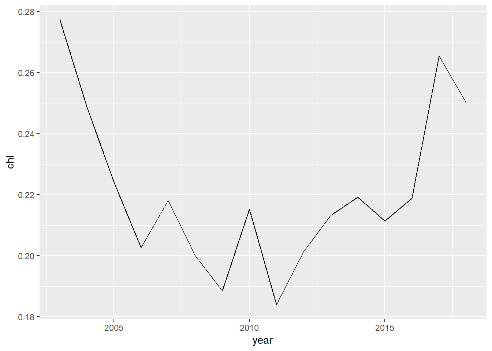

Chapter 14 Plotting in R with ggplot2
The ability to create visualizations—graphical representations of data is an important step to convery your results—information and findings to others. In this chapter, we illustrate how you can use visualize your data and create elegant graphics. One of things that makes R such a great tools is it’s data visualization capabilities. R has many systems for visualization and creating plots, some of which are—base R graphics, lattice and ggplot2, but we focus on the use of ggplot2. The ggplot2 package is a phenomenal tool for creating graphics in R. It provide a unifying framework—a grammar of graphics for describing and building graphs.
Just as the grammar of language helps you construct meaningful sentences out of words, the Grammar of Graphics helps you construct graphicss out of different visual elements. This grammar provides a way to talk about parts of a visual plot: all the circles, lines, arrows, and text that are combined into a diagram for visualizing data. Originally developed by Leland Wilkinson, the Grammar of Graphics was adapted by Hadley Wickham (2016) to describe the components of a plot
The ggplot2 package provides a powerful and flexible approach to data visualization, and its is suitable both for rapdi exploration of different visualization approaches and for producing carefully crafted publication–quality figures. However, getting ggplot2 to make figures that look exactly the way you want them to, can sometimes be challenging and beginners and expert alike can get consufed by themes, scales, coords, guides or facets. ggplot2 further organizes these components into layers, where each layer displays a single type of (highly configurable) geometric object.
Even the most experienced R users need to refer to ggplot2 Cheat Sheet while creating elegant graphics, we will demonstrate step–by–step how to get the most out of ggplot2 package, including how to choose and customize scales, how to theme plots, and when to use add-in packages that extend the ggplot2 capabilities. Some of the extension of gggplot2 that we will introuduce to your include ggspatial, metR, ggrepel, cowplot, etc. Rather than loading these extension packages with require() function, we’ll call their functions using the :: notation. This will help make it clear which funcions are built into ggplot2, and which comes from extensions.
require(tidyverse)
require(magrittr)load addition functions
source("e:/Data Manipulation/semba_functions.R")14.1 A dataset
We’re using a CTD profile data along the coastal water of Tanzania collected in August 2004 with Algoa. I have processed and cleaned the profile data from a CTD instrument, and created a very basic and simple dataset for us to start with. I have tidy the data into a data frame and it contains 10 variables collected at 22 stations (Table 14.1). These variables include the time, longitude and latitude coordinates and the name at each station. It also contains the measured profile of temperature, salinity, oxygen, and fluorescence, spar, par and density as function of pressure.
| Station | Date | Hour | Lon | Lat | Pressure | Temperature | Salinity | Oxygen | Fluorescence |
|---|---|---|---|---|---|---|---|---|---|
| st1 | 2004-08-18 | 15 | 40.61 | -10.54 | 5 | 25.17 | 33.92 | 3.93 | 0.56 |
| st2 | 2004-08-18 | 17 | 40.77 | -10.54 | 5 | 25.16 | 34.85 | 4.47 | 0.62 |
| st3 | 2004-08-18 | 20 | 40.95 | -10.54 | 5 | NA | NA | NA | NA |
| st4 | 2004-08-18 | 22 | 41.12 | -10.54 | 5 | NA | NA | NA | NA |
| st5 | 2004-08-19 | 0 | 41.28 | -10.54 | 5 | NA | NA | NA | NA |
| st6 | 2004-08-19 | 11 | 40.34 | -8.83 | 5 | 25.21 | 34.86 | 4.48 | 0.24 |
| st7 | 2004-08-19 | 13 | 40.18 | -8.83 | 5 | 25.25 | 34.87 | 4.52 | 0.44 |
| st8 | 2004-08-19 | 15 | 40.00 | -8.83 | 5 | 25.02 | 34.86 | 4.59 | 1.14 |
| st9 | 2004-08-19 | 17 | 39.82 | -8.83 | 5 | 25.11 | 34.86 | 4.64 | 1.53 |
| st10 | 2004-08-19 | 19 | 39.67 | -8.83 | 5 | NA | NA | NA | NA |
| st11 | 2004-08-22 | 16 | 39.60 | -9.03 | 5 | 25.44 | 34.91 | 4.98 | 1.71 |
| st12 | 2004-08-23 | 3 | 40.26 | -7.04 | 5 | 25.12 | 34.87 | 4.50 | 0.99 |
| st13 | 2004-08-23 | 6 | 40.10 | -7.05 | 5 | 25.18 | 34.87 | 4.49 | 0.45 |
| st14 | 2004-08-23 | 7 | 39.93 | -7.05 | 5 | 25.28 | 34.88 | 4.60 | 0.84 |
| st15 | 2004-08-23 | 9 | 39.76 | -7.04 | 5 | 25.26 | 34.89 | 4.66 | 1.06 |
| st16 | 2004-08-23 | 11 | 39.59 | -7.04 | 5 | 25.92 | 34.88 | 4.31 | 0.62 |
| st17 | 2004-08-23 | 19 | 40.07 | -5.49 | 5 | 25.64 | 35.19 | 4.40 | 0.82 |
| st18 | 2004-08-23 | 22 | 39.90 | -5.49 | 5 | 25.28 | 34.90 | 4.52 | 0.85 |
| st19 | 2004-08-24 | 1 | 39.56 | -5.49 | 5 | 25.27 | 34.90 | 4.53 | 0.98 |
| st20 | 2004-08-24 | 3 | 39.40 | -5.47 | 5 | 25.23 | 34.89 | 4.81 | 1.11 |
| st21 | 2004-08-24 | 4 | 39.24 | -5.48 | 5 | 25.82 | 34.93 | 4.34 | 0.21 |
| st22 | 2004-08-24 | 5 | 39.10 | -5.48 | 5 | 26.05 | 34.95 | 4.32 | 0.42 |
## make a variable with labelled latitude
ctd = ctd %>% filter(lat > -6) %>% mutate(transect = "transect 1", Lat.label = median(lat)) %>%
bind_rows(ctd %>% filter(lat > -8 & lat < -6) %>% mutate(transect = "transect 2", Lat.label = median(lat)),
ctd %>% filter(lat > -10 & lat < -8) %>% mutate(transect = "transect 3", Lat.label = median(lat)),
ctd %>% filter(lat < -10) %>% mutate(transect = "transect 4", Lat.label = median(lat))) %>%
mutate(Lat.label = metR::LatLabel(Lat.label%>% round(2)) %>%as.factor()) 14.2 Components of ggplot objects {components}
I have created a simple plot of this data that show scatterplot of temperature versus fluorescence at the four different transects (Fig @fig:fig1299). The plot show the concentration of fluorescence against temperature for the twenty one stations along the coastal water of Tanzania.
Figure 14.1: Association of fluorescence concentration per temperature collected in August 2004
Let’s explore in details the key elements used to make figure 14.1:
- data: The data like the one illustrated in table 14.1. It must be a data frame for ggplot2 read and understand.
- aesthetics: is used to map the
xandyaxis for 2–dimensional plot and add thezvalue for 3–dimensionla plots. It is also used to define visual properties like color, size, shapes or height etc, and. For instance in the figure 14.1, the position along they-axis is mapped to the concentration of fluorescence and thex- axis is mapped to temperature values. For the points, the color is mapped to the geogrphical location along the transects. Other aesthetics—like size, shape, and transparency have been left at their default settings. - geometry; a layer which define the type of plot you want to make, whether is
histogram,boxplot,barplot,scatterplot,lineplotetc. - coordinate system: used to set a limit for the plot. The cartesian coordinate is the most familiar and common system that is widely used to zoom the plot and does not change the underlying data.
- scales: scales allows to customize the plot. For instance in figure 14.1 both x and y-axis used continuous data and hence the
scale_x_continuous()andscale_y_continuous()were used to modiy the values of the axis. For color, I simply stick onscale_colour_discrete()and customize the legend name. - labels: The plot is well labelled and easy to understand. It has title, subtitle, axes and caption for the courtesy of the data.
- theme: the plot stick on the default
theme_graytheme, which has a gray background color and white gridlines, a sans serif font family, and a base font size of 11. We can customize all the propoerties in the theme to suit our standard.
14.3 Building a plot
Since you now have a clue of the different layers added to create a plot, its time to work around to create a plot with the ggplot2 package. We use the same profile dataset that used to make figure 14.1. First, you neeed to import the data into your R session.
14.3.1 Plotting layers
To create a data visualization using ggplot2 package, we will add layers for each of the plot elements described in section ??. I will take you through step by step of the key ines needed to make such a plot. First make sure the ggplot2 or tidyverse packages are loaded in your R’s session. You can load the package with this code;
require(tidyverse)The ggplot2 create a ggplot object, and you initialize the object with the ggplot() function
ggplot() The plot above is black with grey background. This is because we have not specified the data and aesthetic arguments inside the
The plot above is black with grey background. This is because we have not specified the data and aesthetic arguments inside the ggplot() function. Let’s specify the data, which in our case is the ctd dataset and also specify the x-axis with temperature and y-axis with fluorescence.
ggplot(data = ctd %>% filter(pressure == 10),
aes(x = temperature, y = fluorescence))Now the plot has gridlines and axis with values and labels—x-axis show the value of temperature and the y-axis show the value of fluorescence concentrations. However, there is no graphics. This is because we have not added any geom yet. Therefore, since we have already specified the data and the aesthetic values, now we can add the geom where we map the aesthetics to columns in the dataset. Let’s add the geom_point() and specify the size to 3
ggplot(data = ctd %>% filter(pressure == 10),
aes(x = temperature, y = fluorescence)) +
geom_point(size = 3)14.3.2 Customize legend
The plot now show points distributed in the panel plot. But our interest is to color the point at each transect. Next, we add an argument col in the aesthetic that map points that fall along a certain transect with similar color. Since we have a variable called transect in the dataset, we specify this as the code below
ggplot(data = ctd %>% filter(pressure == 10),
aes(x = temperature, y = fluorescence, col = transect)) +
geom_point(size = 3)
The plot above show the points are color–coded to refrect the transect in the legend. Note that the colors scheme used in this plot is the default one. Sometimes you will want to customize the aesthetic for all the points in the plot. To change a color scale, you can use the scale_color_viridis_d(). The _d here represent the discrete variable. If you were using the continuous data, you would use scale_color_viridis_c() scheme instead.
ggplot(data = ctd %>% filter(pressure == 10),
aes(x = temperature, y = fluorescence, col = transect)) +
geom_point(size = 3) +
scale_colour_viridis_d()To change the title of the legend you must specify the name argument in your scale_* function. For instance, we specified scale_colour_viridis_d(name = "Transects") to change the legend title for this plot
ggplot(data = ctd %>% filter(pressure == 10),
aes(x = temperature, y = fluorescence, col = transect)) +
geom_point(size = 3) +
scale_colour_viridis_d(name = "Transects\n of CTD Casts")If you want to remove the legend title, we can add a theme layer and specify theme(legend.title = element_blank())
ggplot(data = ctd %>% filter(pressure == 10),
aes(x = temperature, y = fluorescence, col = transect)) +
geom_point(size = 3) +
scale_colour_viridis_d(name = "Transects") +
theme(legend.title = element_blank())We can also change the legend title by specifying theme(legend.title = element_blank())
ggplot(data = ctd %>% filter(pressure == 10),
aes(x = temperature, y = fluorescence, col = transect)) +
geom_point(size = 3) +
scale_colour_viridis_d(name = "Transects\nof CTD Casts") +
theme(legend.title = element_text(size = 12, colour = "chocolate", face = "bold"))14.3.3 Working with titles and labels
Often times you need to customize the axis labels. By default, the scale label for each scale is the name of the variable in the dataset. We can change the labels with labs() function. The other elements we would like to add are the plot title and subtitle. If you want to label SI unit in the ggplot, use the expression() function. Note that I used the expression() function to express mathematical symbols in the x and y–axis of the plot.
ggplot(data = ctd %>% filter(pressure == 10),
aes(x = temperature, y = fluorescence, col = transect)) +
geom_point(size = 3) +
scale_colour_viridis_d(name = "Transects")+
labs(x = expression(Temperature~(degree*C)),
y = expression(Fluorescence~(mgm^{-3})),
title = "Association of Temperature and Profile",
subtitle = "The plot indicat a remarkable sign of transect dependency",
caption = "Courtesy of IIOE-2")14.4 Customize glidline and axis labels
The other layer that we would like to add to customize our plot are the scale_x_continous(), which change the gridline of the x-axis and the scale_y_continuous(), which change the gridlines of the y-axis.
ggplot(data = ctd %>% filter(pressure == 10),
aes(x = temperature, y = fluorescence, col = transect)) +
geom_point(size = 3) +
scale_colour_viridis_d(name = "Transects")+
labs(x = expression(Temperature~(degree*C)),
y = expression(Fluorescence~(mgm^{-3})),
title = "Association of Temperature and Profile",
subtitle = "The plot indicat a remarkable sign of transect dependency",
caption = "Courtesy of IIOE-2")+
scale_x_continuous(breaks = seq(25,26,0.25))+
scale_y_continuous(breaks = seq(0.2,1.8,.2))14.4.1 Remove the gray box of points on legend
The default ggplot always put a gray background of the scatterplot. You can remove it by adding a theme layer and specify the argument legend.key = element_blank() to get rid of them
ggplot(data = ctd %>% filter(pressure == 10),
aes(x = temperature, y = fluorescence, col = transect)) +
geom_point(size = 3) +
scale_colour_viridis_d(name = "Transects")+
labs(x = expression(Temperature~(degree*C)),
y = expression(Fluorescence~(mgm^{-3})),
title = "Association of Temperature and Profile",
subtitle = "The plot indicat a remarkable sign of transect dependency",
caption = "Courtesy of IIOE-2")+
scale_x_continuous(breaks = seq(25,26,0.25))+
scale_y_continuous(breaks = seq(0.2,1.8,.2))+
theme(legend.key = element_blank())14.5 Modify the position of the legend
By default, ggplot2 place the legend on the right position. You can decided to place either left, right, top or bottom. For example, if we want to place the legend at the bottom, we simply specifying the argument legend.position = "bottom" in the theme layer.
ggplot(data = ctd %>% filter(pressure == 10),
aes(x = temperature, y = fluorescence, col = transect)) +
geom_point(size = 3) +
scale_colour_viridis_d(name = "Transects")+
labs(x = expression(Temperature~(degree*C)),
y = expression(Fluorescence~(mgm^{-3})),
title = "Association of Temperature and Profile",
subtitle = "The plot indicat a remarkable sign of transect dependency",
caption = "Courtesy of IIOE-2")+
scale_x_continuous(breaks = seq(25,26,0.25))+
scale_y_continuous(breaks = seq(0.2,1.8,.2))+
theme(legend.key = element_blank(),
legend.position = "bottom")We can also position the legend insite the plot and specify the x and y coordinates. The coordinates range from 0 to 1, from left to right or bottom to top of the plot. For instance, we can place the legend at the top right corner of the plot by specifying legend.position = c(.9,.75) in the theme layer.
ggplot(data = ctd %>% filter(pressure == 10),
aes(x = temperature, y = fluorescence, col = transect)) +
geom_point(size = 3) +
scale_colour_viridis_d(name = "Transects")+
labs(x = expression(Temperature~(degree*C)),
y = expression(Fluorescence~(mgm^{-3})),
title = "Association of Temperature and Profile",
subtitle = "The plot indicat a remarkable sign of transect dependency",
caption = "Courtesy of IIOE-2")+
scale_x_continuous(breaks = seq(25,26,0.25))+
scale_y_continuous(breaks = seq(0.2,1.8,.2))+
theme(legend.key = element_blank(),
legend.position = c(.9,.75))14.5.1 Change the legend background and stroke color
By default, ggplot legend has a white fill for background and without color for stroke. We can customize the look of the legend in the theme layer. For example, we want our legend to have an ivory fill and black stroke of 0.25 size. This can be achieved by adding and argumentlegend.background = element_rect(fill = "ivory", colour = "black", size = .25) in the theme layer.
ggplot(data = ctd %>% filter(pressure == 10),
aes(x = temperature, y = fluorescence, col = transect)) +
geom_point(size = 3) +
scale_colour_viridis_d(name = "Transects")+
labs(x = expression(Temperature~(degree*C)),
y = expression(Fluorescence~(mgm^{-3})),
title = "Association of Temperature and Profile",
subtitle = "The plot indicat a remarkable sign of transect dependency",
caption = "Courtesy of IIOE-2")+
scale_x_continuous(breaks = seq(25,26,0.25))+
scale_y_continuous(breaks = seq(0.2,1.8,.2))+
theme(legend.key = element_blank(),
legend.position = c(.9,.75),
legend.background = element_rect(fill = "ivory", colour = "black", size = .25))14.5.2 Modify background colors
You can remove the background fill and stroke color with the panel.background = element_blank()
ggplot(data = ctd %>% filter(pressure == 10),
aes(x = temperature, y = fluorescence, col = transect)) +
geom_point(size = 3) +
scale_colour_viridis_d(name = "Transects")+
labs(x = expression(Temperature~(degree*C)),
y = expression(Fluorescence~(mgm^{-3})),
title = "Association of Temperature and Profile",
subtitle = "The plot indicat a remarkable sign of transect dependency",
caption = "Courtesy of IIOE-2")+
scale_x_continuous(breaks = seq(25,26,0.25))+
scale_y_continuous(breaks = seq(0.2,1.8,.2))+
theme(legend.key = element_blank(),
legend.position = c(.9,.75),
legend.background = element_rect(fill = "ivory", colour = "black", size = .25),
panel.background = element_blank())You can customize the the background fill and stroke colors to your what fit you best with the panel.background = element_rect() and specify the stroke with color and background with the fill arguments.
ggplot(data = ctd %>% filter(pressure == 10),
aes(x = temperature, y = fluorescence, col = transect)) +
geom_point(size = 3) +
scale_colour_viridis_d(name = "Transects")+
labs(x = expression(Temperature~(degree*C)),
y = expression(Fluorescence~(mgm^{-3})),
title = "Association of Temperature and Profile",
subtitle = "The plot indicat a remarkable sign of transect dependency",
caption = "Courtesy of IIOE-2")+
scale_x_continuous(breaks = seq(25,26,0.25))+
scale_y_continuous(breaks = seq(0.2,1.8,.2))+
theme(legend.key = element_blank(),
legend.position = c(.9,.75),
legend.background = element_rect(fill = "ivory", colour = "black", size = .25),
panel.background = element_rect(fill = "lightblue", colour = "black"))
14.5.3 change the gridlines
You can also customize the color and shape of the gridlines. You can remove the gridline with panel.grid = element_blank() argument in the theme layer. But if you want to customize the gridlines, then you use the panel.grid = element_line() and specify the color and linetype etc.
ggplot(data = ctd %>% filter(pressure == 10),
aes(x = temperature, y = fluorescence, col = transect)) +
geom_point(size = 3) +
scale_colour_viridis_d(name = "Transects")+
labs(x = expression(Temperature~(degree*C)),
y = expression(Fluorescence~(mgm^{-3})),
title = "Association of Temperature and Profile",
subtitle = "The plot indicat a remarkable sign of transect dependency",
caption = "Courtesy of IIOE-2")+
scale_x_continuous(breaks = seq(25,26,0.25))+
scale_y_continuous(breaks = seq(0.2,1.8,.2))+
theme(legend.key = element_blank(),
legend.position = c(.9,.75),
legend.background = element_rect(fill = "ivory", colour = "black", size = .25),
panel.background = element_blank(),
panel.grid = element_line(colour = "grey60", linetype = "dotted", size = .25))14.5.4 Change the font size for axis, labels and titles
The fonts for axis ticks, axis-title text have a default font size of 11, if we want to increase the font size to 12 then then we can do that inside the theme(). We can also change the font size for titles, subtitles and legend text and title as the chunk below highlight.
ggplot(data = ctd %>% filter(pressure == 10),
aes(x = temperature, y = fluorescence, col = transect)) +
geom_point(size = 3) +
scale_colour_viridis_d(name = "Transects")+
labs(x = expression(Temperature~(degree*C)),
y = expression(Fluorescence~(mgm^{-3})),
title = "Association of Temperature and Profile",
subtitle = "The plot indicat a remarkable sign of transect dependency",
caption = "Courtesy of IIOE-2")+
scale_x_continuous(breaks = seq(25,26,0.25))+
scale_y_continuous(breaks = seq(0.2,1.8,.2))+
theme(legend.key = element_blank(),
axis.text = element_text(size = 11),
axis.title = element_text(size = 13),
plot.subtitle = element_text(size = 12),
plot.title = element_text( size = 20),
legend.text = element_text(size = 11),
legend.title = element_text(size = 12),
plot.caption = element_text(size = 11))14.5.5 Limit axis to a range
We use the coord_cartesian() function to adjust the visible area of the plot. You should specify the range of the ylim=c() and xlim = c() and expand = FALSE to show only the area of the plot you want to visualize.
ggplot(data = ctd %>% filter(pressure == 10),
aes(x = temperature, y = fluorescence, col = transect)) +
geom_point(size = 3) +
scale_colour_viridis_d(name = "Transects")+
labs(x = expression(Temperature~(degree*C)),
y = expression(Fluorescence~(mgm^{-3})),
title = "Association of Temperature and Profile",
subtitle = "The plot indicat a remarkable sign of transect dependency",
caption = "Courtesy of IIOE-2")+
scale_x_continuous(breaks = seq(25,26,0.25))+
scale_y_continuous(breaks = seq(0.2,1.8,.2))+
theme(legend.key = element_blank(),
axis.text = element_text(size = 11),
axis.title = element_text(size = 13),
plot.subtitle = element_text(size = 12),
plot.title = element_text( size = 20),
legend.text = element_text(size = 11),
legend.title = element_text(size = 12),
plot.caption = element_text(size = 11)) +
coord_cartesian(xlim = c(24.9,26.05), ylim = c(0.1,2), expand = FALSE)14.5.6 Adding labels
ggplot2 provide geom_tex() and geom_label function for adding label on the plot. geom_text() adds text directly to the plot. geom_label() draws a rectangle behind the text, making it easier to read.
ggplot(data = ctd %>% filter(pressure == 10),
aes(x = temperature, y = fluorescence, col = transect)) +
geom_point(size = 3) +
geom_text(aes(label = station), nudge_x = 0.05, nudge_y = .04)+
scale_colour_viridis_d(name = "Transects")I find it difficult to position label with geom_text(), especially when you have a lot of points to label. I often use the ggrepel package, which provides text and label geoms for ggplot2 that help to avoid overlapping text labels. These function makes labels repel away from each other and away from the data points.
ggplot(data = ctd %>% filter(pressure == 10),
aes(x = temperature, y = fluorescence, col = transect)) +
geom_point(size = 3) +
ggrepel::geom_text_repel(aes(label = station))+
scale_colour_viridis_d(name = "Transects")14.5.7 Add text annotation
There are times you may need to add a text on top of the plot. In ggplot2 you can place a label using the real values on the plot instead of the hard-core coorinates to specify the location based on scaled coordinates where 0 is low and 1 is high. This is useful for adding small annotations (such as text labels) or if you have your data in vectors, and for some reason don’t want to put them in a data frame.
ggplot(data = ctd %>% filter(pressure == 10),
aes(x = temperature, y = fluorescence, col = transect)) +
geom_point(size = 3) +
scale_colour_viridis_d(name = "Transects")+
labs(x = expression(Temperature~(degree*C)),
y = expression(Fluorescence~(mgm^{-3})),
title = "Association of Temperature and Profile",
subtitle = "The plot indicat a remarkable sign of transect dependency",
caption = "Courtesy of IIOE-2")+
scale_x_continuous(breaks = seq(25,26,0.25))+
scale_y_continuous(breaks = seq(0.2,1.8,.2))+
theme(legend.key = element_blank(),
axis.text = element_text(size = 11),
axis.title = element_text(size = 13),
plot.subtitle = element_text(size = 12),
plot.title = element_text( size = 20),
legend.text = element_text(size = 11),
legend.title = element_text(size = 12),
plot.caption = element_text(size = 11)) +
coord_cartesian(xlim = c(24.9,26.05), ylim = c(0.1,2), expand = FALSE) +
annotate(geom = "text", x = 25.95 , y = 1.82, label = "My label")14.5.8 Make the x and y axis the same
The coord_cartesian() is the coordinate system that you will use most of the time because most of the plot are created from two or more variables that have different scales. However, there are situations where you create plots that use the same scale of x-and y-coordinates. For example, ploting temperature profiles from two stations, then an appropriate coordinae system in that case is the coord_equal()
## tidy the temperature from long to wide format
ctd.temprature.wide = ctd %>%
select(station, temperature, pressure) %>%
spread(key = "station", value = "temperature")
## make aplot
ggplot(data = ctd.temprature.wide,
aes(x = st3, y = st8)) +
geom_point() +
coord_equal() 14.5.9 Faceting —Creating multi–panel plots
Facets are ways of arranging plots into multiple different pieces (subplots). This allows you to view a separate plot for each unique value in a categorical variable. The ggplot2 package has a nice function for creating multi-panel plots. The facet_wrap creates essentially a ribbon of plots based on a single variable. For example the plot below, I first filtered only profile below 201 meters and classify them into bins of below 50 meters, 50 to 100 and above 100 meters. This computed depth class was used to make multiple plot of boxplot of fluorescence at the four transects. in the facet_wrap() layer, I specified the ~depth.class to use this variable for faceting and nrow = 1, for the canvas to have one row with multiple columns depending on the groups, four our case we get three columns from the depth classes.
## filter the pressure and break them into class of 50,100,200
ctd.class.depth = ctd %>%
filter(pressure < 201) %>%
mutate(depth.class = cut(pressure,
breaks = c(0,50,100,200),
labels = c("Below 50", "50-100", "Above 100")))
ggplot(data = ctd.class.depth,
aes(x = transect,y = fluorescence, fill = transect)) +
geom_boxplot() +
theme(axis.text.x = element_blank(), axis.ticks.x = element_blank()) +
scale_fill_discrete(limits = c("transect 1", "transect 2", "transect 3", "transect 4"),
labels = c("Pemba", "Kimbiji", "Lindi", "Mtwara")) +
labs(x = NULL, y = expression(Fluorescence~(mgm^{-3})))+
facet_wrap(~depth.class, nrow = 1) 14.5.10 Allow scales to roam free (scales)
The default for multi-panel plots in ggplot2 is to use equivalent scales in each panel. But sometimes you want to allow a panel’s own data to determine the scale. This may mislead to the audience since it give creaes plots with different scales. You can specify the scales="free" in the facet_wrap() layer written as;
## filter the pressure and break them into class of 50,100,200
ctd.class.depth = ctd %>%
filter(pressure < 201) %>%
mutate(depth.class = cut(pressure,
breaks = c(0,50,100,200),
labels = c("Below 50", "50-100", "Above 100")))
ggplot(data = ctd.class.depth,
aes(x = transect,y = fluorescence, fill = transect)) +
geom_boxplot() +
theme(axis.text.x = element_blank(), axis.ticks.x = element_blank()) +
scale_fill_discrete(limits = c("transect 1", "transect 2", "transect 3", "transect 4"),
labels = c("Pemba", "Kimbiji", "Lindi", "Mtwara")) +
labs(x = NULL, y = expression(Fluorescence~(mgm^{-3})))+
facet_wrap(~depth.class, nrow = 1, scales = "free_y") 14.6 Basic plots
The ggplot2 package provides a set of functions that mirror the Grammar of Graphics, enabling you to efficaciously specify what you want a plot to look like. To have a glimpse of ggplot2, we start with five basic types of plots that are familiar to most people. These include:
- scatterplot
- linegraphs
- boxplots
- histograms
- barplots
Note that the four graphs works with quantitative data and barplots are appropriate for categorical data. Thus, understanding the type of data you want to plot is a fundamental principle before you throw the variable into ggplot2 to make plot for you.
14.6.1 scatterplot
Scatterplots are also called bivariate, allows you to visualize the association between two numerical variables. They are among the widely used plot because they can provide an immediate way to see the pattern of association between two numerical variables.
Figure 14.2: scatterplot from base R
Most of us are familiar with scatterplot shown in figure and made several of them using base R, but probably you have not made one based on the fundamental theorem of grammar of graphics. We will visualize the relationship between temperature and fluorescence. Because the ctd is profile data frame with variable as function of pressure, we want to check for the association of all the 22 station but at fixed depth of 10 meters. What this means is that we will take the ctd data and filter all variable at all station measured at water depth of 10 meters from the surface and save this in a new data frame called ctd10d. This can be written as:
ctd10d = ctd %>%
filter(pressure == 10)Let’s now dive into the code of using the *grammar of graphics to create the scatterplot. We use the ggplot() function from ggplot2** package. The code to create figure ?? is written as;
ggplot(data = ctd10d,
aes(x = temperature, y = fluorescence)) +
geom_point() Let’s explore the block above piece-by-piece
- The plotting in ggplot2 begin with
ggplot()function, where the two components of grammar of graphics are required. in thedatacomponent we specify the data frame of variables measured at 10 meter water below the surface by settingdata = ctd10d. Then the second argumentaesthetic that map the plot with coordinate was set byaes(x = temperature, y = fluorescence)). In a nutshell, theaes()define the variable–axis specifications. For the code above we set the variablestemperatureinto thexcoordinate and the variablefluorescenceinto they-axis. - We then add a layer to the
ggplot()function calll using the+sign. The added layer specify the third part of the *grammar—thegeometric component. Becasue we want to plot scatterplot, the appropriategeomfor this case is thegeom_point().
Figure 14.3: Scatterplot showing the association between temperature and fluorescence at 10 meter water from the surface
Once the code is run, it produce two outputs: a warning message and figure ??. The warning message notify us that out of the 22 stations, there are three stations with missing data at 10 meter water. We can check station with missing values with code written below;
ctd10d %>%
filter(is.na(temperature)) %>%
select(station, pressure, temperature, fluorescence)# A tibble: 3 x 4
station pressure temperature fluorescence
<chr> <dbl> <dbl> <dbl>
1 st10 10 NA NA
2 st4 10 NA NA
3 st5 10 NA NA14.6.2 adding regression line
you can simply add the regression line by addign a geom_smooth() layer and specify the method = "lm" and we dont need to show the confidence errors, hence we specify se = FALSE
ggplot(data = ctd10d,
aes(x = temperature, y = fluorescence)) +
geom_point() +
geom_smooth(method = "lm", se = FALSE)While the geom_point() and geom_smooth() layers in this code both use the same aesthetic mappings, there’s no reason you couldn’t assign different aesthetic mappings to each geometry. Note that if the layers do share some aesthetic mappings, you can specify those as an argument to the ggplot() function
Looking on the generated scatterplot (Figure ??), we notice a negative relation exist between temperature and fluorescence—stations with high temperature have relatively low concentration of fluorescence and viceversa. We also notice that 16 stations are clustered within \(25-25.25^{\circ}\) C and only three are found at temperature range between \(25.75-26^{\circ}\) C. We can identify these pattern by adding a col argument in aes by setting aes(x = temperature, y = fluorescence, col = Lat.label)). The code for creating figure ?? is written as;
ggplot(data = ctd10d,
aes(x = temperature, y = fluorescence, col = Lat.label)) +
geom_point() 
Looking on the color of thelegend, it clearly indicate the two stations with temperatur above \(25.75^{\circ}\) C are found along the transect lies along latitude 5.49°S in Pemba Channel and and one at latitde7.04°S off the Kimbiji.
We may also be interested to knwo whether dissolved oxygen has influrence on the the association of temperature and fluoresce. We can achieve that by simply parsing the the shape = oxygen, arguments into the aesthetic component. Figure ?? clearly shows the stations with relatively high chlorophyll value have bigger shape (high DO value) and found in relatively less warmer waters in contrast to stations with low chl-value have smaller shape size, indicating low DO and found in relatively warmer water. The chunk for making figure ?? is written as:
ggplot(data = ctd10d,
aes(x = temperature, y = fluorescence, size = oxygen)) +
geom_point() 
Figure 14.4: Scatterplot showing the association between temperature and fluorescence at 10 meter water from the surface and the influence of dissolved oxygen
14.7 Linegraph
# I donwloaded the data using the code below and save it into the project directory. This chunk will never run but rather the proceeding step will use the data that was downloade and processed with code in this chunk.
result = xtractomatic::searchData("datasetname:mday")
## sst, Aqua MODIS, NPP, L3SMI, Global,0.041, Science Quality (Monthly Composite)
xtractomatic::getInfo(dtype = "mhsstdmday")
## Chlorophyll-a, Aqua MODIS, NPP, L3SMI, Global,0.041, Science Quality (Monthly Composite)
xtractomatic::getInfo(dtype = "mhchlamday")
sst = xtractomatic::xtracto_3D(dtype = "mhsstdmday",
xpos = c(38.79272,40.24292),
ypos = c(-5.692232,-5.451759),
tpos = c("2014-11-02", "2019-04-16"))
chl = xtractomatic::xtracto_3D(dtype = "mhchlamday",
xpos = c(38.79272, 40.24292),
ypos = c(-5.692232, -5.451759),
tpos = c("2003-01-17", "2019-04-16"))The next basic graph of ggplot2 is the linegraph. Linegraphs is similar to drawing points, except that it conncets the points with line. often times you dont show the points. Linegraphs are commonly used to show time series data. Its inappropriate to use the linegraphs for data that has no clear sequential ordering . Let’s illustrate how to create linegraphs using another dataset ofchlorophyll concentration in the Pemba channel. This is a monthly average data from MODIS satellite. I processed the data and stored them in .RData format. We can load this dataset from the working directory with the load() function as shown in the chunk below;
load("modis_pemba.RData")Exploring further the dataset, we notice that its an array with 35 longitude spacing and 7 latitude spacing and 196 matrix collected every month from 2003-01-16 to 2019-04-16. Being an array, this dataset is not in the right format, since ggplot2 only accept the data frame format.
chl$data %>% class();chl$data %>% dim()[1] "array"[1] 35 7 196Therefore, we need to tidy this dataset from the array into the data frame and find average chlorophyll concentration for each month for 196 months. Because there are 196 matrix, that is a lot of work to do it one after the other. The easiest solution is to loop the process with a for loop. If you are not familiar with how loop works in R, I suggest you check section__ of chapter__, which describe in details. The chunk below highlight the for loop used to convert an array to matrix
## preallocate object
sst.tb = list()
chl.tb = list()
## loop sst
for (i in 1:length(sst$time)){
sst.tb[[i]] = matrix_tb(x = sst$longitude,
y = sst$latitude,
data = sst$data[,,i]) %>%
mutate(time = sst$time[i] %>%as.Date()) %>%
select(date = time,lon = x, lat = y, sst = value)
}
## loop chl
for (j in 1:length(chl$time)){
chl.tb[[j]] = matrix_tb(x = chl$longitude,
y = chl$latitude,
data = chl$data[,,j]) %>%
mutate(time = chl$time[j] %>%as.Date()) %>%
select(date = time,lon = x, lat = y, chl = value)
}
## unlist the listed sst and chl files
sst.tb = sst.tb %>% bind_rows(sst.tb)
chl.tb = chl.tb %>% bind_rows(chl.tb)We then used the function in lubridate::year() and lubridate::month() to create the year and month variables from the date variables
chl.decompose = chl.tb %>%
mutate(month = lubridate::month(date, label = TRUE, abb = TRUE),
year = lubridate::year(date) %>% as.integer()) To make a plot of annual average of chlorophyll concentration in the Pemba Channel, we need to monthly mean. We exclude data for year 2003 and 2019 because there only seven months in 2003 and four months in 2019, which can affect the analysis. computing annual average can be written as;
chl.yearly = chl.decompose %>%
filter( year >= 2003 & year <= 2018)%>%
group_by(year) %>%
summarise(chl = mean(chl, na.rm = TRUE))Let’s create linegraph of annual average chlorophyll-a concentration in the Pemba Channel. Like the scatterplot we made earlier, where supply the data frame in data argument and specified the aesthetic mapping with x and y cooridnates, but instead of using geom_point(), we use the geom_line(). The code to make the line graphy of annual average chlorophyll-a conceration shown in figure ?? are written as;
ggplot(data = chl.yearly,
aes(x = year, y = chl))+
geom_line()
Since the selected area is affected with monsoon season, we can further decode the months into their respective southeast (SE) and northeast (NE) and inter-monsoon (IN) seasons using the decode() function from dplyr package as the chunk below show;
chl.season = chl.decompose %>%
mutate(season = month %>% as.character(),
season = recode(.x = season, Jan = "NE"),
season = recode(.x = season, Feb = "NE"),
season = recode(.x = season, Mar = "NE"),
season = recode(.x = season, Apr = "IN"),
season = recode(.x = season, May = "SE"),
season = recode(.x = season, Jun = "SE"),
season = recode(.x = season, Jul = "SE"),
season = recode(.x = season, Aug = "SE"),
season = recode(.x = season, Sep = "SE"),
season = recode(.x = season, Oct = "IN"),
season = recode(.x = season, Nov = "NE"),
season = recode(.x = season, Dec = "NE"))We then compute the year average of chlorophyll-a at each season as written in the chunk below
chl.season = chl.season %>%
filter( year >= 2003 & year < 2019)%>%
group_by(year,season) %>%
summarise(chl = mean(chl, na.rm = TRUE))To make a linegraphy that show annual average of chlorophyll-a concetration for each season as in figure ??, we simply parse the argument col == season in the aes() component as the chunk below hightlight
ggplot(data = chl.season,
aes(x = year, y = chl, col = season))+
geom_line()+
scale_x_continuous(breaks = seq(2002,2019,2))
14.7.1 histogram
A histogram is a plot that can be used to examine the shape and spread of continuous data. It looks very similar to a bar graph and organized in intervals or classes.
. It divides the range of the data into bin equal intervals (also called bins or classes), count the number of observations n in each bin, and display the frequency distribution of observations as a bar plot. Such histogram plots provide valuable information on the characteristics of the data, such as the central tendency, the dispersion and the general shape of the distribution.
Let’s consider the chl variable in the chl.tb data frame. Since histogram works for single variable that contains quantitative values, you can not bother looking for relationship as we have seen in previous plots, but histogram offers an opportunity to answer question like
- What are the smallest and largest values of chl-a?
- What is the center value? 3 How does these values spread out?
We can make a histogram shown in figure ?? by simply setting aes(x = chl) and add geom_histogram(). Within the geom_histogram(), we simply specify the number of bins bins = 28 and also the color seprating each column of the histogram with col == "white". The code to create figure ??, which displays a histogram with twenty eight classes, is written as;
ggplot(data = chl.decompose %>% filter(chl < .5),
aes(x = chl))+
geom_histogram(bins = 28, col = "white")Figure 14.5: Histogram showing the distribution of chlorophyll concentration
14.7.2 boxplot
The box plot is a standardized way of displaying the distribution of data based on the five number summary: minimum, first quartile, median, third quartile, and maximum. Box plots are useful for detecting outliers and for comparing distributions. These five number summary also called the 25th percentile, median, and 75th percentile of the quantitative data. The whisker (vertical lines) capture reoungly 99% of a distribution, and observaion outside this range are plottted as points representing outliers as shown in figure 14.6.
knitr::include_graphics("./images/boxplot-01.png")
Figure 14.6: Boxplot five numbers
Box plots can be created by using the geom_boxplot() function and specify the data variable.
ggplot(data = chl.decompose %>%
filter( chl < .25), aes(y = chl))+
geom_boxplot()The firstinput must be a categorical variable and the second must be a continuous variable.
ggplot(data = chl.season %>%
filter( chl < .25), aes(x = season, y = chl))+
geom_boxplot()the geom_boxplot() has outlier_ arguments that allows to highlight and modify the color, shape, size, alpha … etc of outliers —extreme observation. For instance, you can highlight the outlier with;
ggplot(data = chl.season %>%
filter( chl < .25), aes(x = season, y = chl))+
geom_boxplot( outlier.colour = "red", outlier.shape = 8, outlier.size = 4)We can also map the fill and color to variable in to distinguish boxplot. for example, we can specify the fill = season argument in the aes() to fill the boxplot based on season.
ggplot(data = sst.season ,
aes(x = month, y = sst, fill = season))+
geom_boxplot( outlier.colour = "black", outlier.shape = 8, outlier.size =1.2)+
scale_fill_manual(values = c(4,2,3))We can add the points on top of the boxplot with the geom_jitter(). It also allows for specifying other arguments like colors and width of the points.
ggplot(data = chl.season %>%
filter( chl < .25), aes(x = season, y = chl))+
geom_boxplot()+
geom_jitter(width = .05, height = .05, col = "blue")14.7.3 barplot
Bar graphs are perhaps the widely used plot. They are typically used to display numeric values on the y-axis for different groups on the x-axis. There is an important distiction you should be aware of when making bar graphs. The heigh of a bar in barplot may represent either the counts or values of elements in the dataset. Let’s begin with the former—count. We use the drifter observations, which passed at the confluence—where the South Equatorial Current splits to form the northward flowing called the East Africa Coastal Current and the southward flowing the Mozambique Current. We first load the daset as the code highlight;
drifter_confluence = read_csv("drifter_confluence.csv")14.7.3.1 barplot for count
To make the bar graph that show the number of drifters crossed the ares per month over the entire period you you simply specify the the variable month in the x coordinates in the aesthetic and add the geom_bar()
ggplot(data = drifter_confluence,
aes(x = month)) +
geom_bar()Sometimes you may wish to stack bars. For instance drifter have drogued—an anchor, which reduce speed of the drifter wind effect. When the drogue is lost, drifter slip and tend to overestimate the current speed. In our dataset, the drogue are coded with 0 == Absent, and 1 = Present. Because zero and ones make no sense, we create a new variables of that replace zero with LOST and ones with PRESENT. we use the if_else() function from dplyr to convert these values and assign the object as drifter.drogue. The conversion can be attained with code written as;
drifter.drouge = drifter_confluence %>%
mutate(drogue.status = if_else(condition = drogue==1, true = "PRESENT", false = "LOST"))Then to stack the bar based on the drogue status, we simpy add the fill = drogue.status in aes() part
ggplot(data = drifter.drouge,
aes(x = month, fill = drogue.status))+
geom_bar()
You can flip the order of bar with position = position_stack(reverse = TRUE)
ggplot(data = drifter.drouge,
aes(x = month, fill = drogue.status))+
geom_bar(position = position_stack(reverse = TRUE))Instead of stacking, you can dodge the bar with position = position_dodge() argument
ggplot(data = drifter.drouge,
aes(x = month, fill = drogue.status))+
geom_bar(position = position_dodge())To add a black stroke color of the bar, add the argument col = "black" inside the geom_bar()
ggplot(data = drifter.drouge,
aes(x = month, fill = drogue.status))+
geom_bar(position = position_dodge(), col = "black")And to specify the width of the bar you specify a value in width argument in geom_bar()
ggplot(data = drifter.drouge,
aes(x = month, fill = drogue.status))+
geom_bar(position = position_dodge(), col = "black", width = .75)
Sometimes you want to map bar with different colors for negative and positive values. For this case we will use the sea surface temperature from drifter observation and create a new variable called anomaly—indicate the temperature value above (positive value) and below (negative) the climatological mean. The code for computing anomaly is;
sst.anomaly = drifter_confluence %>%
group_by(year) %>%
summarise(average = mean(sst, na.rm = TRUE)) %>%
mutate(anomaly = average - mean(average),
anomaly.status = if_else(anomaly > 0 , "Above", "Below")) %>%
filter(year > 1996)once we have computed the anomaly of sea surface temperature for each year, we can plot the withe geom_col() and specify x = year, and y = anomaly and fill = anomaly.status. We also need to specify the position == "identity" to prevent notification message of poor defined stacking for bar with negative values.
ggplot(data =sst.anomaly,
aes(x = year, y = anomaly, fill = anomaly.status)) +
geom_col(position = "identity", width = .8)Although the plot looks good but sometimes we may wish to reverse the filled color.We can reorder the color with the scale layer. Because the variable used to fill the bar is categorical, the appropriate scale is scale_fill_discrete() and you specify the limits with limits = c("Below", "Above"). The legend is this plot is not important and we can remove from th plot with guides(fill = FALSE)
ggplot(data =sst.anomaly,
aes(x = year, y = anomaly, fill = anomaly.status)) +
geom_col(position = "identity", width = .8)+
scale_fill_discrete(limits = c("Below", "Above"))+
guides(fill = FALSE)The red
14.7.4 barplot for values
We have seen how to make barplot that show the count with geom_bar(). You can also use the barplot to show the values with the geom_col() function and specify what variables you want on the x and y axis. For instance, we want to show how surface current varies over twelve months. Because the geom_col() requires summarized statistics, we need to compute the average current speed for each month. The chunk below highlight how to compute the mean, maximum, minimum and standard deviation of surface current velocity for each month.
current.speed.monthly = drifter.drouge %>%
filter() %>% mutate(speed = sqrt(u^2 + v^2)) %>%
group_by(month, drogue.status) %>%
summarise(speed_min = min(speed, na.rm = TRUE),
speed_mean = mean(speed, na.rm = TRUE),
speed_max = max(speed, na.rm = TRUE),
speed_sd = sd(speed, na.rm = TRUE)) %>%
ungroup()Once we have computed the statistics, we can use them to make barplot. Note that unlike the geom_bar() that need only the x variable, geom_col() requires x and y variables specified. For illustration, we specified the x = month, and y = speed_mean in the aes() to make a barplot that show the monthly monthly mean surface current.
ggplot(data = current.speed.monthly,
aes(x = month,y = speed_mean))+
geom_col()
Although ggplot2 allows to stack the barplot that present values, although they seems appealing, you must avoid making such kind of plot, because they tend to mislead and difficult to distinguish betwen the groups.
ggplot(data = current.speed.monthly,
aes(x = month,y = speed_max, fill = drogue.status))+
geom_col()The appropriate way if you want to compare two or more groups with geom_col(), you better doge the bar instead of stacking them. This makes easier to compare. For instance, in the case here, its cleary to see months of which drifter with lost drogues move relatively faster than those with droguue.
ggplot(data = current.speed.monthly,
aes(x = month,y = speed_max, fill = drogue.status))+
geom_col(position = position_dodge())
Note: the basic barplot that present count or frequency has one categorical variable on the x axis and you can make with geom_bar()And the barplot that present the values for instance the average of the variable has one categorical variable on the x axis and continuos variable on the y axis and you create them with geom_col() function. You can make a grouped bar plot by mapping that variable to fill, which represent the fill color of the bars. Like the variables mapped to the x axis, variables that are specified to the fill color of bars must be categorical instead of continuous.
drifter.interest = drifter_confluence %>% group_by(id) %>% summarise(count = n(), begin = dplyr::first(date), end = dplyr::last(date), period = lubridate::interval(start = begin, end = end, tzone = "") %>% lubridate::as.duration() %>% as.numeric("hours")) %>% filter(period >1000)
drifter.interest.point = drifter.interest %>% left_join(drifter_confluence, by = "id") %>% mutate(id.drifter = paste("ids", id, sep = ""))
ggplot(data = drifter.interest.point , aes(x = lon, y = lat, col = id.drifter))+geom_path()+geom_point()+
metR::scale_x_longitude(ticks = .3)+
metR::scale_y_latitude(ticks = .4)14.8 Advanced plots
ggplot2 with its add-in packages provides extensive capabilities for visualizing your data. You can produce 2D plots, 3D plots, and animations; you can view images; and you can create histograms, contour and surfaces plots, and other graphical representations of your data.
its’s fun to explore pattern over time with linegraphy. Time is so embedded in our day–to–day life tha so many aspects of visualizing temporal data are fairly intuitive. You understand thing changing and evolving—the hard part is figuring out by how much is changing and look for that change in the graph. It’s easy to glance over some lines on a plot and say something is increasing, which is good as that is the core function of visualization to help you see the patterns. But, because of averaging, we sometimes miss some subtle changes that hidden when we lumped data together.
chl.tb %>%
mutate(month = lubridate::month(date), year = lubridate::year(date)) %>%
group_by(year, month) %>%
summarise(chl = mean(chl, na.rm = TRUE))%>%
filter(year < 2019) %$%
interpolate2(x = year , y = month, z = chl, n = 16)%>%
rename(year = x, month = y, chl = z) %>%
filter(chl < .4)%>%
ggplot(aes(x =year, y = month, z = chl))+
metR::geom_contour_fill(na.fill = TRUE, bins = 20)+
scale_fill_gradientn(colours = oce::oce.colorsJet(n = 120))+
scale_y_reverse(breaks = 1:12,
label = seq(lubridate::dmy(010119),
lubridate::dmy(311219), by = "month") %>%
lubridate::month(abbr = TRUE, label = TRUE))+
scale_x_continuous(breaks = seq(2002,2017,2))+
coord_cartesian(expand = FALSE)+
labs(x = NULL, y = NULL)+
theme_bw()%+%
theme(axis.text = element_text(size = 11, colour = "black"))+
guides(fill = guide_colorbar(raster = FALSE, barheight = 15, barwidth = 1.1,
title.theme = element_text(angle = 90, size = 13),
title.position = "right", title.hjust = .5,
label.theme = element_text(size = 10),
title = expression(Chlorophyll~concetration~(mgm^{-3}))))I used oce::oce.colorsJet(120) and specify 120 color gradient to obtain color scheme similar to the Matlab Jet scheme. It widely used for maps but works great for general visualization like heatmaps.
14.8.1 Facets
Sometimes you may wish to split your plot into facets—subplots that each display one subset of the data. Faceting is used when you wish make subplots from categorical variables. It creates multiple copies of the same type of plot with matching x and y axes. There is a scale(), which allows you to adjust the x and y axes according to groups in the categorical variable.
## list files from the working directory
tafiri = list.files(pattern = "tafiri_")
## make a vector of variables. The order must be consistency with the files order in
var = c("chl", "pp", "sst")
## make a vector of site. The order must be consistency with the sheets in files
sites = c("Pemba", "Zanzibar", "Mafia", "EEZ")
## preallocate an empty object
tafiri.data = NULL
for (i in 1:length(var)){
for (j in 1:length(sites)){
data = readxl::read_excel(path = tafiri[i], sheet = j)%>%
rename(date = 1, year = 2, value = 3) %>%
mutate(month = lubridate::month(date),
day = 15,
site = sites[j],
variable = var[i],
date = lubridate::make_date(year = year, month = month, day = day)) %>%
arrange(date)
## stitch processed data frame from each sheet
tafiri.data = tafiri.data %>%
bind_rows(data)
}
}For instance, suppose we’re interested in looking at how the hovmoller of monthly primary productivity varies over time across the four stations, We split this heatmaps by the four stations. We achieve this by simply adding facet_wrap(~site, nrow = 2) layer;
ggplot()+
metR::geom_contour_fill(data = tafiri.data %>% filter(variable == "pp"),
aes(x = year, y = month, z = value), na.fill = TRUE, bins = 20)+
coord_cartesian(expand = FALSE)+
scale_y_reverse(breaks = seq(2,11,2), label = c("February", "April", "June", "August", "October"))+
scale_x_continuous(breaks = seq(2004,2017,4))+
scale_fill_gradientn(colors = oce::oce.colors9A(120), breaks = seq(400,1600,200))+
theme_bw() %+replace%
theme(axis.text = element_text(size = 12, colour = 1))+
guides(fill = guide_colorbar(title = expression(mgm^{-3}),
title.position = "top",
title.hjust = 0.5,
direction = "vertical",
reverse = FALSE,
barwidth = unit(.4, "cm"),
barheight = unit(4, "cm")))+
labs(x = NULL, y = NULL)+
guides(fill = guide_colorbar(raster = FALSE, barheight = 15, barwidth = 1.1,
title.theme = element_text(angle = 90, size = 13),
title.position = "right", title.hjust = .5,
label.theme = element_text(size = 10),
title = expression(Primary~Productivity~(Cm^{-3}~yr^{-1}))))+
facet_wrap(~site, nrow = 2) Note the use of the tilde
Note the use of the tilde ~ before the site in facet_wrap(). The tilde is required when you want specify the variable that will be used to split the plots into subplots. We can add other arguments in the facet_wrap() function. Let say we want our plot to be in one rows and four columns by simply adding the argument nrow = 1
14.8.2 Sea Surface Temperature
ggplot()+
metR::geom_contour_fill(data = tafiri.data %>% filter(variable == "sst"),
aes(x = year, y = month, z = value), na.fill = TRUE, bins = 20)+
coord_cartesian(expand = FALSE)+
scale_y_reverse(breaks = seq(2,11,2), label = c("February", "April", "June", "August", "October"))+
scale_x_continuous(breaks = seq(2004,2017,4))+
scale_fill_gradientn(colors = oce::oce.colors9A(120))+
theme_bw() %+replace%
theme(axis.text = element_text(size = 11, colour = 1))+
guides(fill = guide_colorbar(title = expression(mgm^{-3}),
title.position = "top",
title.hjust = 0.5,
direction = "vertical",
reverse = FALSE,
barwidth = unit(.4, "cm"),
barheight = unit(4, "cm")))+
labs(x = NULL, y = NULL)+
guides(fill = guide_colorbar(raster = FALSE, barheight = 15, barwidth = 1.1,
title.theme = element_text(angle = 90, size = 13),
title.position = "right", title.hjust = .5,
label.theme = element_text(size = 10),
title = expression(Sea~Surface~Temperature~(degree*C))))+
facet_wrap(~site, nrow = 1)14.8.3 Subplot
There are occasions when it is convenient to display several plots side-by-side. In these instances,
you will want to use the cowplot package. we first create ggplot2 object of Primary productivity for the channels we are interested: for Mafia Channel we assign the name mafia.pp and for Zanzibar Channel zanzibar.pp. The chunk below show how to create the these object.
mafia.pp = ggplot()+
metR::geom_contour_fill(data = tafiri.data %>% filter(variable == "pp" & site == "Mafia"),
aes(x = year, y = month, z = value), na.fill = TRUE, bins = 20)+
coord_cartesian(expand = FALSE)+
scale_y_reverse(breaks = 1:12, label = seq(lubridate::dmy(010119),
lubridate::dmy(311219), by = "month") %>%
lubridate::month(abbr = TRUE, label = TRUE))+
scale_x_continuous(breaks = seq(2004,2017,4))+
scale_fill_gradientn(colors = oce::oce.colors9A(120),limits = c(300,1700), breaks = seq(400,1600,200))+
theme_bw() %+replace%
theme(axis.text = element_text(size = 12, colour = 1), legend.position = "none")+
guides(fill = guide_colorbar(title = expression(mgm^{-3}),
title.position = "top",
title.hjust = 0.5,
direction = "vertical",
reverse = FALSE,
barwidth = unit(.4, "cm"),
barheight = unit(4, "cm")))+
labs(x = NULL, y = NULL)+
guides(fill = guide_colorbar(raster = FALSE, barheight = 15, barwidth = 1.1,
title.theme = element_text(angle = 90, size = 13),
title.position = "right", title.hjust = .5,
label.theme = element_text(size = 10),
title = expression(Primary~Productivity~(Cm^{-3}~yr^{-1}))))
zanzibar.pp = ggplot()+
metR::geom_contour_fill(data = tafiri.data %>% filter(variable == "pp" & site == "Zanzibar"),
aes(x = year, y = month, z = value), na.fill = TRUE, bins = 20)+
coord_cartesian(expand = FALSE)+
scale_y_reverse(breaks = 1:12, label = seq(lubridate::dmy(010119),
lubridate::dmy(311219), by = "month") %>%
lubridate::month(abbr = TRUE, label = TRUE))+
scale_x_continuous(breaks = seq(2004,2017,4))+
scale_fill_gradientn(colors = oce::oce.colors9A(120), limits = c(300,1700), breaks = seq(400,1600,200))+
theme_bw() %+replace%
theme(axis.text = element_text(size = 12, colour = 1), axis.text.y = element_blank())+
guides(fill = guide_colorbar(title = expression(mgm^{-3}),
title.position = "top",
title.hjust = 0.5,
direction = "vertical",
reverse = FALSE,
barwidth = unit(.4, "cm"),
barheight = unit(4, "cm")))+
labs(x = NULL, y = NULL)+
guides(fill = guide_colorbar(raster = FALSE, barheight = 15, barwidth = 1.1,
title.theme = element_text(angle = 90, size = 13),
title.position = "right", title.hjust = .5,
label.theme = element_text(size = 10),
title = expression(Primary~Productivity~(Cm^{-3}~yr^{-1}))))Once we have the ggplot2 objects, we can now combine them side by side with the cowplot::plot_grid() function.
cowplot::plot_grid(mafia.pp,
zanzibar.pp,
nrow = 1,
rel_widths = c(.8,1),
labels = c("Mafia", "Zanzibar"),
label_x = c(.2,.001),
label_y = .98,
label_fontface = "plain",
label_size = 12)
profile = ctd %>% filter(station == "st2")
ggplot(data = profile,
aes(x = temperature, y = pressure)) +
geom_point()This produce a scatterplot shown in figure ??, which shows a strong correlation as the water depth increase the temperature decrease. Using the *grammar of graphics of the ggplot2**, the structure of the code used to make figure ?? is defined by;
- Data:
profile, - Aesthetic mapping:
temperaturevalues mapped toxposition, pressure values mapped toyposition - Geometry:
points
In ggplot2, a plot is created with the ggplot() function, where data and aesthetic mappings are supplied as arguments, then layers are added on with +.
14.9 Colour
The aesthetic component in ggplot2 allows to add additional variables to a graph. For instance, We can map the colors of the points to the temperature variable to reveal the gradient of dissolved oxygen as a function of depth
ggplot(data = profile,
aes(x = temperature,
y = pressure,
col = oxygen)) +
geom_point()
14.10 size
The aesthetic component in ggplot2 also allows to distinguish the plot with size of the variableh. For instance, We can map the size of the points to the temperature variable to reveal the gradient of dissolved oxygen as a function of depth
ggplot(data = profile %>% sample_frac(.25),
aes(x = temperature, y = pressure, col = oxygen, size = oxygen)) +
geom_point()Although we can map the temperature profile as points, it is appropriate to plot this profile as line. We can replace the geom_point() with geom_path() for that purpose
ggplot(data = profile,
aes(x = temperature, y = pressure, col = oxygen)) +
geom_path()
14.11 scaling
A scale controls the mapping from data to aesthetic attributes. Its recommended to manipulate the scale for every aesthetic used on a plot. For example we want the x-axis labels to be position at the top and reverse the y-axis. The code can be writeen as;
ggplot(data = profile,
aes(x = temperature, y = pressure, col = oxygen)) +
geom_path()+
scale_y_reverse(name = "Pressure [m]",
breaks = seq(0,810,100))+
scale_x_continuous(position = "top",
name = expression(Temperature~(degree*C)),
breaks = seq(6,29,3))We might want to change the default color provided with ggplot2 on the legend. Since we commanded the plot to display gradient colors from dissolved oxygen, We use the scale_color_gradientn() function. The code can be writeen as;
ggplot(data = profile,
aes(x = temperature, y = pressure, col = oxygen)) +
geom_path()+
scale_y_reverse(name = "Pressure [m]",
breaks = seq(0,810,100))+
scale_x_continuous(position = "top",
name = expression(Temperature~(degree*C)),
breaks = seq(6,29,3))+
scale_color_gradientn(colours = rainbow(11) %>% rev())
14.12 Guides
Context is provided by guides. A guide help a human reader to understand the meaning of the visual cues. For example
ggplot(data = profile,
aes(x = temperature, y = pressure, col = oxygen)) +
geom_path()+
scale_y_reverse(name = "Pressure [m]",
breaks = seq(0,810,100))+
scale_x_continuous(position = "top",
name = expression(Temperature~(degree*C)),
breaks = seq(6,29,3))+
scale_color_gradientn(colours = rainbow(11) %>% rev())+
# theme(legend.position = "right") +
guides(color = guide_colorbar(title = "Dissolved oxygen (ml/L)",
title.position = "right",
title.theme = element_text(angle = 90),
barheight = 15,
barwidth = .95,
title.hjust = .5,
ticks.colour = "black"))ggplot(data = ctd %>% filter(pressure == 10),
aes(x = lon, y = lat))+
geom_point()+
ggrepel::geom_text_repel(aes(label = station))
14.13 Add-on packages
The R community has developed packages that extend the capability of ggplot2. Some of the packages include:
- metR: Provide addition tools for plotting filled contour, and label contour lines
- ggrepel: Contains tools for automatically position non-overlapping text labels
- ggspatial: Spatial Data Framework for ggplot2
- RcolorBrewer: Contains color palettes for continuous and discrete plots
- cowplot: Contains addition themes and tools to combine ggplot2 plots in one panel
- egg: Provide tools for plot aligning and symmetrised ggplot2 plots
- oce: Provide color pallete for visualization of Oceanographic Data
- ggsn: Provide tools for mapping North symbols and scale bars on maps created with ggplot2
- gganimate: convert static ggplot2 plots to animations
- ggformula: adds some additional plot options to ggplot2
- sf : Add capabilities of ggplot2 to map spatial data such as simple features
- ggthemes: contains extra themes, scales, and geoms, and functions for and related to ggplot2
- ggridges: extend the geom_density function by plotiing closed polygons insted of ridgelines
14.14 ggridges
Althoug ehe ggridges package provides geom_ridgeline and geom_density_ridges, we focus on the latter because it has ability to estimates data densities and then draws those using ridgelines.The geom geom_density_ridges calculates density estimates from the provided data and then plots those, using the ridgeline visualization.
ctd = ctd %>%
mutate(strata = cut(x = pressure, breaks = c(0,80,120,200),
labels = c("Upper", "Middle", "Lower")))
ctd.strata = ctd %>%
group_by(strata, pressure, lon,lat) %>%
summarise(temperature = mean(temperature, na.rm = TRUE),
salinity = mean(salinity, na.rm = TRUE),
oxygen = mean(oxygen, na.rm = TRUE),
fluorescence = mean(fluorescence, na.rm = TRUE)) %>%
ungroup() %>%
filter(!is.na(strata))
ggplot(data = ctd.strata, aes(x = temperature, y = strata))+
ggridges::geom_density_ridges2()+
scale_y_discrete(limits = c("Lower", "Middle", "Upper"))Trailing tails can be cut off using the rel_min_height() aesthetic. This aesthetic sets a percent cutoff relative to the highest point of any of the density curves. A value of 0.01 usually works well, but you may have to modify this parameter for different datasets.
ggplot(data = ctd.strata, aes(x = temperature, y = strata))+
ggridges::geom_density_ridges2(rel_min_height = 0.01)+
scale_y_discrete(limits = c("Lower", "Middle", "Upper"))ggplot(data = ctd.strata, aes(x = temperature, y = strata))+
ggridges::geom_density_ridges2(scale = 8,rel_min_height = 0.01)+# scale =80, substantial overlap
scale_y_discrete(limits = c("Lower", "Middle", "Upper"))
14.15 Varying fill colors along the x axis
Sometimes we would like to have the area under a ridgeline not filled with a single solid color but rather with colors that vary in some form along the x axis. This effect can be achieved with the geoms geom_ridgeline_gradient and geom_density_ridges_gradient. Both geoms work just like geom_ridgeline and geom_density_ridges, except that they allow for varying fill colors. However, they do not allow for alpha transparency in the fill. For technical reasons, we can have changing fill colors or transparency but not both.
Here is a simple example of changing fill colors with geom_ridgeline_gradient:
ggplot(data = ctd.strata, aes(x = temperature, y = strata, fill = strata))+
ggridges::geom_density_ridges_gradient(scale = 5,rel_min_height = 0.01)+# scale =5, substantial overlap
scale_y_discrete(limits = c("Lower", "Middle", "Upper"))
ggplot(data = ctd.strata, aes(x = temperature, y = strata, fill = ..x..))+
ggridges::geom_density_ridges_gradient(scale = 5,rel_min_height = 0.01)+# scale =5, substantial overlap
scale_y_discrete(limits = c("Lower", "Middle", "Upper"))+
scale_fill_gradientn(colours = oce::oce.colorsTemperature(120), breaks = seq(14,26,2))+
guides(fill = guide_colorbar(title =expression(Temperature~~(degree*C)),
title.position = "right",
title.hjust = .5, raster = TRUE,
title.theme = element_text(angle = 90, size = 12),
label.theme = element_text(size = 11),
barheight = 15, barwidth = .95))14.16 metR
transect2 = ctd %>% filter( lat >= -8 &lat < -6 & pressure < 205)
ggplot(data = transect2,
aes(x = lon, y = pressure, z = fluorescence))+
metR::geom_contour_fill(na.fill = TRUE, bins = 20)+
# metR::geom_contour2()+
scale_y_reverse(breaks = seq(0, 205,30))+
scale_x_continuous(breaks = transect2 %>% distinct(lon) %>% pull(),
labels = metR::LonLabel(transect2 %>% distinct(lon) %>%
pull()%>%round(digits = 2)))+
scale_fill_gradientn(colours = oce::oceColors9A(120), breaks = seq(0,2,.2))+
coord_cartesian(expand = FALSE)+
guides(fill = guide_colorbar(title =expression(Chlorophyll~concentration~(mgm^{-3})),
title.position = "right",
title.hjust = .5, raster = FALSE,
title.theme = element_text(angle = 90, size = 12),
label.theme = element_text(size = 11),
barheight = 15, barwidth = .95))+
labs(x = NULL, y = "Water depth [m]")+
geom_vline(xintercept = transect2 %>% distinct(lon) %>% pull(),
linetype = "dashed", col = "ivory")+
theme_bw()+
theme(axis.text = element_text(size = 11), axis.title = element_text(size = 12))depth = c(10,50,100,200)
algoa = NULL
for (i in seq_along(depth)){
strata = ctd %>%
filter(lon > 39.3 & lon < 40.5 & lat >= -10 & pressure == depth[i]) %>% select(3:9)
Lon = strata %>% pull(lon)
Lat = strata %>% pull(lat)
data = strata %>% select(4:7)
for (j in seq_along(data)){
algoa.interp = strata %$% oce::interpBarnes(x = Lon, y = Lat, z = data[j]%>% pull())
algoa.tb = algoa.interp %$%
matrix_tb(x = xg, y = yg, data = zg) %>%
rename(lon = x, lat = y) %>%
mutate(variable = colnames(data[j]), pressure = depth[i])
algoa = algoa %>% bind_rows(algoa.tb)
}
}
# algoa %>% group_by(pressure, variable) %>% summarise(average = mean(value, na.rm = TRUE))ggplot()+
metR::geom_contour_fill(data = algoa %>% filter(variable == "fluorescence"),
aes(x = lon, y = lat, z = value), na.fill = TRUE, bins = 20)+
scale_fill_gradientn(colours = oce::oceColors9A(120))+
scale_y_continuous(breaks = seq(-8.5,-6,2.5),
labels = metR::LatLabel(seq(-8.5,-6,2.5)))+
scale_x_continuous(breaks = seq(39.55,40.25,length.out = 3) %>% round(2),
labels = metR::LonLabel(seq(39.55,40.25,length.out = 3)))+
facet_wrap(~pressure)+
labs(x = NULL, y = NULL)+
theme_bw()+
theme(axis.text = element_text(size = 11))+
coord_cartesian(expand = FALSE)+
guides(fill = guide_colorbar(title =expression(Chlorophyll~concentration~(mgm^{-3})),
title.position = "right",
title.hjust = .5, raster = FALSE,
title.theme = element_text(angle = 90, size = 12),
label.theme = element_text(size = 11),
barheight = 15, barwidth = .95))ggplot()+
metR::geom_contour_fill(data = algoa %>% filter(variable == "temperature"),
aes(x = lon, y = lat, z = value), na.fill = TRUE, bins = 20)+
scale_fill_gradientn(colours = oce::oceColors9A(120))+
scale_y_continuous(breaks = seq(-8.5,-6,2.5),
labels = metR::LatLabel(seq(-8.5,-6,2.5)))+
scale_x_continuous(breaks = seq(39.55,40.25,length.out = 3) %>% round(2),
labels = metR::LonLabel(seq(39.55,40.25,length.out = 3)))+
facet_wrap(~pressure)+
labs(x = NULL, y = NULL)+
theme_bw()+
theme(axis.text = element_text(size = 11))+
coord_cartesian(expand = FALSE)+
guides(fill = guide_colorbar(title =expression(Temperature~(degree*C)),
title.position = "right",
title.hjust = .5, raster = FALSE,
title.theme = element_text(angle = 90, size = 12),
label.theme = element_text(size = 11),
barheight = 15, barwidth = .95))
ggplot()+
metR::geom_contour_fill(data = algoa %>% filter(variable == "oxygen"),
aes(x = lon, y = lat, z = value), na.fill = TRUE, bins = 20)+
scale_fill_gradientn(colours = oce::oceColors9A(120))+
scale_y_continuous(breaks = seq(-8.5,-6,2.5),
labels = metR::LatLabel(seq(-8.5,-6,2.5)))+
scale_x_continuous(breaks = seq(39.55,40.25,length.out = 3) %>% round(2),
labels = metR::LonLabel(seq(39.55,40.25,length.out = 3)))+
facet_wrap(~pressure)+
labs(x = NULL, y = NULL)+
theme_bw()+
theme(axis.text = element_text(size = 11))+
coord_cartesian(expand = FALSE)+
guides(fill = guide_colorbar(title =expression(Dissolved~oxygen~(mgm^{-3})),
title.position = "right",
title.hjust = .5, raster = FALSE,
title.theme = element_text(angle = 90, size = 12),
label.theme = element_text(size = 11),
barheight = 15, barwidth = .95))
ggplot()+
metR::geom_contour_fill(data = algoa %>% filter(variable == "salinity"),
aes(x = lon, y = lat, z = value), na.fill = TRUE, bins = 20)+
scale_fill_gradientn(colours = oce::oceColors9A(120))+
scale_y_continuous(breaks = seq(-8.5,-6,2.5),
labels = metR::LatLabel(seq(-8.5,-6,2.5)))+
scale_x_continuous(breaks = seq(39.55,40.25,length.out = 3) %>% round(2),
labels = metR::LonLabel(seq(39.55,40.25,length.out = 3)))+
facet_wrap(~pressure)+
labs(x = NULL, y = NULL)+
theme_bw()+
theme(axis.text = element_text(size = 11, colour = "black"))+
coord_cartesian(expand = FALSE)+
guides(fill = guide_colorbar(title =expression(Salinity),
title.position = "right",
title.hjust = .5, raster = FALSE,
title.theme = element_text(angle = 90, size = 12),
label.theme = element_text(size = 11),
barheight = 15, barwidth = .95))
References
Wickham, Hadley. 2016. Ggplot2: Elegant Graphics for Data Analysis. Springer-Verlag New York. https://ggplot2.tidyverse.org.